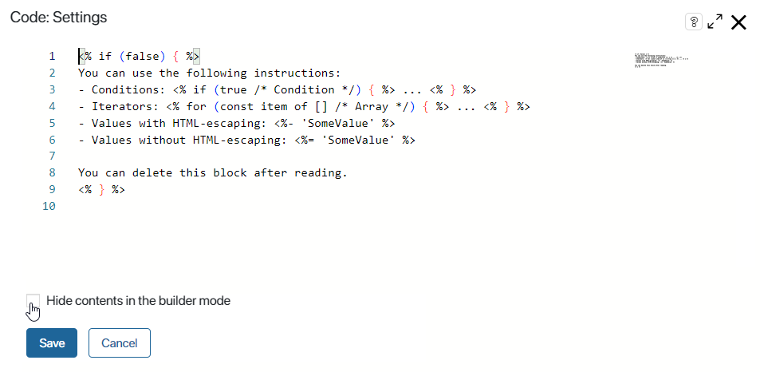
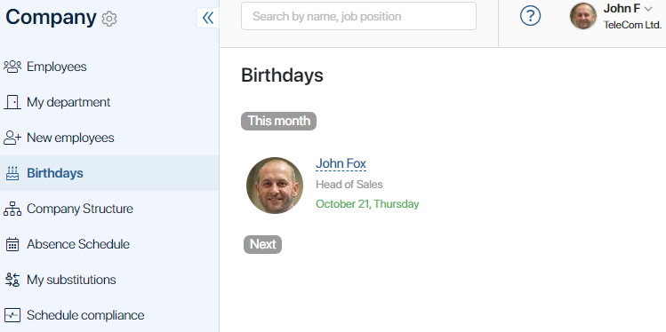

The Code widget allows you to work with HTML code. For example, you can highlight form elements or display data from BRIX and other systems on a page. In addition, with this widget you can add scripts to a form or a page, as well as create dynamic task and app forms.
начало внимание
Using Global or Namespace constants in scripts restricts the export of system components. Read more about it in the Global constants in scripts article.
конец внимание
Add the widget
To configure the widget, drag it from the right-side panel of the interface designer to the canvas or click +Widget. To learn more, see Form templates.
In the pop-up window, you can add HTML code that is dynamically generated using special syntax constructions.

Check the Hide contents in the builder mode option and enter a name of the script so that the code you write is not shown on the modeling canvas.
Syntax constructions
In this widget you can use syntax constructions of three types:
1. <% Constructions, declarations %>. See the examples below.
2. <%- Escaping of HTML characters %>. For example, if the value is preceded by the < character, it will be represented as <.
3. <%= Unescaping of HTML characters %>. For example, if the value is <b>Attention!</b>, the displayed text will be “Attention” (in bold).
Let’s have a look at the syntax constructions of the first type:
Conditions
<% if (data.Value > 10) { %>
Content that you want to display.
<% } %>
if-else
<% if (true) { %>
Content that you want to display.
<% } else { %>
Content that you want to display.
<% } %>
Loops
<% for (const item of data.items) { %>
Content that you want to display.
<% } %>
Declarations (for example, function)
<% function renderValueInTag(value, tag) { %>
<<%= tag %>>
<%- value %>
</<%= tag %>>
<% } %>
Call a function from the client script
You can use the <%= Scripts %>.FUNCTION_NAME() construction in the Code widget to call a client script written in TypeScript and added on the Scripts tab of the interface designer.
For example, clicking the Open button will start the OpenPopup script.
<button onclick="<%= Scripts%>.OpenPopup()">Open</button>
Displaying other widgets using the Code widget
In your code, you can add syntax constructions to display custom or some of the system widgets via the context menu. This way you will not need to write the code of the construction manually. This method is extremely useful for reusing widgets.
Let's say you need to set up a page for viewing a product. On the page, you place an image of the product, add a price and links to its technical characteristics. You also want to use other widgets with information about similar products on the same page. This means that you can reuse the widget that is already used for the first product.
Here is what you can do: when setting up the page using the Code widget, in the script context menu select Add widget. Then, in the pop-up, select the widget that you want to reuse. The syntax construction will be automatically added to your script.
Here is an example of such a construction for displaying a custom widget:
<%= UI.widget.render('@custom_widget', {title: Context.data.title, notes: "Description"}) %>
The following widgets can be reused in this manner: Tabs, Drop-down menu, Pop-up, Panel with header, and custom widgets created within the same app or workspace as the form or page that you are setting up. That is, when working with the Code widget on a workspace’s page, you can use the Add widget option to add custom widgets created in the same workspace or on forms and pages of its apps.
You can enable access to custom widgets that belong to other workspaces. To do that, click Settings in the top pane of the interface designer and select Allow using all items. Please note that in this case you will not be able to export the app or workspace later.
Use case
By using a script in the Code widget you can get data from the Employees app in order to display the information on the upcoming birthdays on the page.

async function onInit( :Promise <void> { |
To show the value of the context variable in the Code widget, use the following syntax:
<%= UI.widget.contextValue ('currentMonth', {readonly:true}) %>
Note that currentMonth is a context variable of the Table type. Users who have birthday in the current month are added to the table via the onInit() function. This function is executed when a user opens the page.
To learn more about methods in the Code widget, see API for displaying standard widgets and API for client scripts in TS SDK.
Found a typo? Select it and press Ctrl+Enter to send us feedback